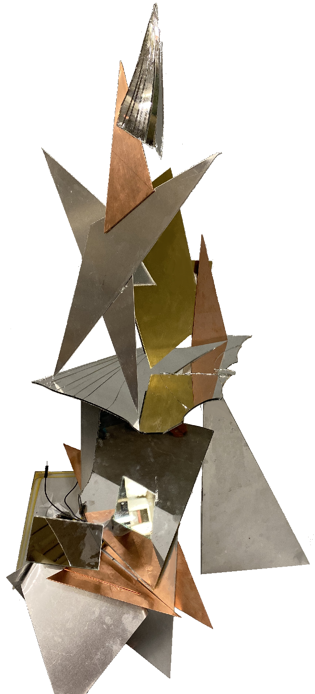

お題：平面の板を組み合わせて立体を作れ

二次元の材料で三次元の成果物を作れということを暗示したお題でした。文字通り次元の違う私はお題である三次元の、その上の上、五次元をテーマに創作することにしました。
五次元がどういう存在なのか人類はまだ発見できていませんでした。五次元の仮説を立てていた私は、その内容を広め議論するためにこの作品を作ることにしたのです。
次元とは簡単に言うと着眼点や評価基準の数です。
一次元は線、二次元は平面、三次元は立体、四次元は立体が時間の流れに伴って変化するものです。
数学的に言うと(x,y,z,t)のような軸が増えていくことを次元が増えると言います。
ではこれを野球のバッティングに置き換えて考えてみましょう。
打者は球を遠くに打ち返すために、球が飛んでくる位置にバットの芯を運ばなければいけません。まず注意しなければいけない軸の１つ目がx軸(横軸)です。ボールがどれだけ内角に来ているのか外角に来ているのかを見極めます。
次に注意すべきなのがy軸(縦軸)です。球がどれだけ高いのか低いのかを見極めます。
３つ目はz軸(奥行き)です。これは球がどれだけ投手側にあるのか捕手側にあるのかの指標です。
さて、そろそろお気づきかもしれませんが、1つの軸の値が変わると他の軸の値も変わります。例えば、奥行き(z)が捕手側に近づくにつれ、球の高さ(y)は基本的に低い方に近づいてきます。ここが一番のミソなのですが、私たちが平面(二次元)で物を考えているとき、z軸の値は自動的に何かに固定されているのです。野球の例で言うと、固定された奥行きはベースの真ん中やキャッチャーミットの位置に来るでしょう。
さて、４つ目の軸は時間軸(t)です。tは(物理的に細かいことを抜きにして言えば)一定の早さで加算されていきます。投手が投げた0.1秒後にはまだ球は高めの位置に有り、投手寄りの奥行きの位置にありますが、0.5秒後には(横軸の値も含めて)変わっています。配球データの図はxとyの二次元だけを考慮した物なので、zとt軸は自動的に捕手が捕球した奥行きとタイミングで固定されます。しかし実際には、配球データの図だけでは、球の軌道は表しきれません。
一般的に私たちは上記の４つの軸にしか気付いておらず、５つ目以降の値を自動的に身近な１つに決めて固定しています。
私が今回提唱したい5つ目の軸は「インタラクティブ性(i)」です。インタラクティブ(interactive)とは相互作用のことで、外部の物がどこでどのように影響して来るかというものです。
よくタイムマシンの話になると出てくるパラレルワールドという世界線の話に近いかもしれません。t軸の時間という値は一定の速度で流れますが、その流れの中でどう作用するかで物事の結果は変わります。野球の例えで言うと、球の軌道は球場で観戦しているあなたが邪魔をするために走って変えに行けるということです。
二次元が絵画、三次元が彫刻、四次元がVR動画だとすれば、五次元はVRゲームにあたります。プレイヤーがどこでどのコマンドを入力するかで、流れる視覚情報が結果的に変わるのがゲームであり、五次元なのです。
お題の通り、材料は基本的に平面の板だけで構成されています。銅線を接触させて回路が繋がったときに鏡が回転するのが特徴です。ただの立体の置物ではなく「動く」という性質が四次元を表しています。時間(t)によって見た目の形が変わるというのが四次元の性質です。
銅線を繋げるか繋げないか、またどこに繋げるのかという性質が五次元を表しています。繋げた場合と繋げなかった場合で任意の時刻に見えるはずの形が変わります。これが私の思う五次元の性質です。また、五次元へのアクセスに一次元を表す線を繋いでいるというところもポイントです。
回転しているのは鏡で、銅線を繋ぐ人間の反射を暗示しています。
銅線を繋ぐ人間を反射しているのは、五次元とはあなたの行動であるという正体を映し出しています。意思を持った生物またはランダムで制御されるコンピューターが対象物に作用していないと五次元は意味をなしません。その場合は五つ目の軸であるインタラクティブ性(i)の値が定数に固定されてしまうのです。上の方に星が載っているのは、五次元を発見したときの脳内の様子を表しており、星の鋭角(とんがり)の数は次元の数を、割れた鏡は次元の数は四つまでという既存の定説の破壊を表しています。